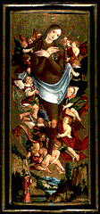

<!--This file created 10/16/97 5:50 PM by Claris Home Page version 2.0-->
<HTML>
<HEAD>
   <TITLE>Mpls Inst Arts - World Mythology: Elevation of the
   Magdalen</TITLE>
   <META NAME="GENERATOR" CONTENT="Claris Home Page 2.0">
   <X-SAS-WINDOW TOP="67" BOTTOM="480" LEFT="56" RIGHT="586">
<HEAD>
</HEAD>
<BODY TEXT="#111111" LINK="#660000" ALINK="#AA0000" VLINK="#444444" BACKGROUND="backgroundbrown.gif">

<P><FONT SIZE="+2">Curriculum Materials: World Mythology</FONT>
<HR>
<!--------Top Myth Menu------><TABLE BORDER="3">
   <TR>
      <TD>
         <P><CENTER><A HREF="introduction.html#top">Introduction</A>
         ~ <A HREF="mythbyimage.html#top">Myth by Image</A> ~
         <A HREF="culturelist.html#top">Myth by Culture</A> ~
         <A HREF="myths.html#top">Mythological Comparisons</A> ~
         <A HREF="glossary.html#top">Glossary</A> ~
         <A HREF="suggestedreading.html#top">Suggested Readings</A> ~
         <A HREF="downloadables.html#top">Downloadable Resources</A>
         ~ <A HREF="../tta/classroom_materials_order.html">How to Order</A> ~
         <A HREF="myth_evaluation.html#top">Your Comments Wanted</A>
         ~ <A HREF="#Story">Story</A> ~
         <A HREF="#Background">Background</A> ~
         <A HREF="#Questions">Questions</A></CENTER>
      </TD></TR>
</TABLE>
<HR>
<A NAME="top"></A>&nbsp;<TABLE BORDER="0" CELLSPACING="10" WIDTH="445">
   <TR>
      <TD>
         <P><A HREF="full_jpg/14.jpg"></A><BR>
         
         <B>Image 14</B><BR>
         
         <FONT SIZE="+2">The Elevation of the Magdalen</FONT><BR>
         
         Peter Strub the Younger (Master of Messkirch)<BR>
         
         Germany, active 1530-43<BR>
         
         16th century<BR>
         
         Tempera on panel<BR>
         
         60 1/2 x 24 3/4 inches<BR>
         
         The Bergmann Richards Memorial Fund and the Fiduciary Fund
         82.83
         <HR>
         </P>
         
         <P><CENTER><A NAME="Key"></A><B>Key Ideas</B></CENTER></P>
         
         <UL>
            <LI>Since the Middle Ages, the Christian story of Mary
            Magdalene demonstrated that through repentance
            forgiveness was possible.
            
            <LI>During the Middle Ages and
            <A HREF="glossary.html#RENAISSANCE">RENAISSANCE</A>, the
            Christian saints were popular role models. As such, they
            frequently appeared in large altarpiece paintings.
            
            <LI>The <A HREF="glossary.html#IDEALIZED">IDEALIZED</A>
            beauty of Mary Magdalene as well as the
            <A HREF="glossary.html#REALISM">REALISTIC</A> details in
            this <A HREF="glossary.html#TEMPERA">TEMPERA</A> painting
            are typical of northern European art during the 16th
            century.
         </UL>
         
         <P>
         <HR>
         <A NAME="Story"></A></P>
         
         <P><CENTER><B>Story</B></CENTER></P>
         
         <P>Mary Magdalene, her sister, Martha, and her brother,
         Lazarus, were set adrift in a rudderless open boat by some
         people who did not share their belief in the Christian
         messiah, Jesus. They floated for many days and nights until
         the wind and waves carried them to the shores of Provence in
         southern France. The local people did not share the beliefs
         of the castaways and refused them food and shelter. The
         tattered group finally found refuge in a temple. There, Mary
         and Martha preached the word of Jesus, performed miracles,
         and converted thousands of the people to their faith.</P>
         
         <P>Mary regretted many of the things she had done in her
         youth. Wishing to repent, she devoted herself to a life of
         solitary contemplation in the wilderness. For thirty years
         she lived as a hermit in a cave prepared for her by angels.
         Over time, her clothes rotted away and her hair grew and
         grew until it covered her entire body.</P>
         
         <P>During the last years of Mary's life, a host of angels
         lifted her toward the heavens seven times a day. One day a
         local priest witnessed this event. Mary identified herself
         to the dumbstruck priest and sent him to tell the bishop to
         look for her on a specified day. On that day the bishop
         forgave Mary for the sins of her youth. Mary then died and
         her soul rose to heaven. After her death, Mary continued to
         perform miracles for those who prayed to her.</P>
         
         <P>
         <HR>
         <A NAME="Background"></A></P>
         
         <P><CENTER><B>Background</B></CENTER></P>
         
         <P><B>Mary Magdalene</B><BR>
         
         Mary of Magdala, better known as Mary Magdalene, is referred
         to in Mark's gospel in the Bible's New Testament as the
         woman from whom Jesus cast seven devils (16:9). Mark also
         identifies her as one of three Marys who anoint Jesus' body
         after his crucifixion (16:1), and as the first person Jesus
         sees after his resurrection (16:9). Later traditions
         identified her as the unnamed prostitute described in Luke's
         gospel who was forgiven her sins by Jesus, after she washed
         his feet with her tears and dried them with her hair (7:36).
         During the Middle Ages, Mary Magdalene came to exemplify the
         faithful and repentant sinner. She stood as a message to
         Catholic believers that no one, except the devil, is beyond
         forgiveness and redemption. By 1500, during the age of the
         Counter Reformation, pictures of Mary Magdalene came to
         represent the Roman Catholic Church itself, whose excesses
         could also be forgiven through Christ's love.</P>
         
         <P><B>Saints</B><BR>
         
         The story of Mary Magdalene's work, exile, and death was
         recounted in a popular 13th-century collection of stories
         called <I>The Golden Legend</I> by Jacobus de Voragine
         (ja-KOH-bus duh ve-RAJ-i-nee). <I>The Golden Legend</I> was
         essentially a layperson's version of the lectionaries, or
         lives of the saints, which were read on each saint's feast
         day during the year. As an archbishop of Genoa, Voragine was
         familiar with these texts known chiefly to church clerks.
         </P>
         
         <P>The saints - the heroes of the Middle Ages and
         Renaissance - were role models of perfection, possessing
         divine wisdom, super strength, and unwavering devotion.
         These exemplars of Christian virtues frequently appeared in
         altarpiece paintings, inspiring worshipers to emulate their
         behavior.</P>
         
         <P><B>The Elevation Elevation of the Magdalen</B><BR>
         
         Peter Strub's (stroob) painting <I>The Elevation Elevation
         of the Magdalen </I> shows Mary, covered with hair, being
         lifted up by 14 angels. A golden halo surrounds her
         idealistically youthful face, which shows no signs of her
         30-year stay in the wilderness. Her abundantly flowing red
         hair is a common
         <A HREF="glossary.html#ATTRIBUTE">ATTRIBUTE</A>, referring
         to her humble drying of Jesus' feet. Far less typical is the
         animal-like fur that covers much of her idealized body. Mary
         folds her hands over her chest, which is not covered by fur.
         Her knees are also exposed, all hair evidently worn away
         from kneeling in constant prayer. The angels discreetly
         cover her lower abdomen with a crisply draped cloth. From
         the mountainous landscape below, a priest looks up at the
         miraculous vision.</P>
         
         <P><B>Style</B><BR>
         
         Peter Str&uuml;b's tempera painting <I>The Elevation of the
         Magdalen</I> is for the most part typical of German
         Renaissance art. The flat gold
         <A HREF="glossary.html#BACKGROUND">BACKGROUND</A>, a
         characteristic feature of medieval art, remained a popular
         tradition in religious painting well into the Renaissance.
         The gold suggests that the subject is holy and bathed in
         heavenly light. By contrast, the detailed landscape below
         Mary is very much a part of the earthly realm. Typical of
         German painters of his era who rendered their native
         landscape in great detail, Strub painted Mary Magdalene in a
         mountainous German landscape, rather than in southern
         France. Fine realistic details abound, from the leafy trees
         and craggy rocks to the individual hairs of Mary's fur suit
         and the soft feathers of the angels' wings. This attention
         to detail is one of the most characteristic traits of German
         Renaissance art.</P>
         
         <P>
         <HR>
         </P>
         
         <P><CENTER><B><A NAME="Questions"></A>Discussion
         Questions</B></CENTER></P>
         
         <P><B>Look</CENTER></B> <B>1.</B> <B>Tell the story of Mary
         Magdalene.</B> What parts of the story do you see in this
         painting? <B>(A priest witnesses a host of angels lifting
         Mary up to heaven.)</B> How can you tell it's a priest?
         <B>(Ecclesiastic clothing.)</B> How can you tell they are
         angels? <B>(Wings.)</B> How many angels are there?
         <B>(Fourteen.)</B><BR>
         
         <BR>
         
         <B>2.</B> Attention to details is one of the most
         characteristic traits of German
         <A HREF="glossary.html#RENAISSANCE">RENAISSANCE</A> art.
         What details has this artist carefully described? <B>(Mary's
         hair, the folds of angels' costumes, angels' wings, leaves
         and rocks in landscape.)</B></P>
         
         <P><B>3.</B> Below Mary is a detailed
         <A HREF="glossary.html#NATURALISTIC">NATURALISTIC</A>
         landscape. Does the sky behind her look similarly
         naturalistic? (No.
         <A HREF="glossary.html#BACKGROUND">BACKGROUND</A> is covered
         with <A HREF="glossary.html#GOLD">GOLD LEAF</A>.) Why might
         an artist use gold on a background? <B>Explain the
         popularity of using gold as a background in religious
         painting to indicate a sacred subject and to reflect
         light.</B></P>
         
         <P><B>4.</B> Str&uuml;b and his contemporaries during the
         German <A HREF="glossary.html#RENAISSANCE">RENAISSANCE</A>
         sought to <A HREF="glossary.html#IDEALIZED">IDEALIZE</A>
         their subjects. They believed that artists should strive to
         represent perfection even if that perfection was absent in
         real nature. For example, the story of Mary Magdalene tells
         us that hair grew over her entire body, but Str&uuml;b did
         not paint hair on Mary's knees and breasts. Lack of hair on
         Mary's knees suggests her kneeling in prayer, while lack of
         hair on Mary's breasts signifies her ideal feminine beauty.
         How else has Str&uuml;b idealized his subject? Clue: The
         story of Mary Magdalene tells us she lived in a cave for 30
         years before angels daily lifted her toward heaven! Does
         Mary look as if she lived in a cave for 30 years in this
         painting? Why not?</P>
         
         <P>
         <HR>
         <BR>
         
         <B>Think</B><BR>
         
         <B>1.</B> During the Middle Ages, Mary Magdalene served as a
         reminder to Catholics that every one may be forgiven. Have
         you ever regretted anything you have done? Were you
         forgiven? How? What happened? Have you ever forgiven anyone
         else?</P>
         
         <P><B>2.</B> Which other works of art have you seen in this
         image set that represent a story in which the character was
         forgiven? <B>(Herakles on the
         <I><A HREF="slide7.html">hydria</I>, image 7</A>.)</B> Why
         did Herakles need forgiveness? <B>(He murdered his
         family.)</B> What did Herakles have to do to be forgiven?
         <B>(He performed the 12 Labors, including slaying the Nemean
         Lion and the Wild Boar of Erymanthus.)</B></P>
         
         <P><B>3.</B> Str&uuml;b painted Mary in a German landscape
         rather than the landscape of southern France, where she
         actually lived. Why might he have done this? <B>(Although we
         don't know for sure, Str&uuml;b may not have known the
         landscape of southern France. He also may have wanted to
         associate his homeland with a holy event.)</B></P>
         
         <P><B>4.</B> During the Middle Ages, many people looked to
         the saints as behavioral role models. Who are your role
         models? Do pictures of your role models exist? Where?</P>
         
         <P><B>5.</B> The artist who
         <A HREF="glossary.html#CAST">CAST</A> the bronze
         <I><A HREF="slide8.html">Oceanus</I> (image 8)</A> also used
         precious metals in his work, but for a different purpose.
         <B>Explain the different reasons for using precious metals
         in the two works of art. The bronze Oceanus included silver
         and copper highlights in order to increase the value of the
         sculpture. Str&uuml;b used <A HREF="glossary.html#GOLD">GOLD
         LEAF</A> on the
         <A HREF="glossary.html#BACKGROUND">BACKGROUND</A> of his
         painting not only to increase the value of the painting, but
         also to symbolize the value of the subject matter, Mary
         Magdalene</B>.
      </TD></TR>
</TABLE>
<HR>
<TABLE BORDER="3">
   <TR>
      <TD>
         <P><CENTER><A HREF="introduction.html#top">Introduction</A>
         ~ <A HREF="mythbyimage.html#top">Myth by Image</A> ~
         <A HREF="culturelist.html#top">Myth by Culture</A> ~
         <A HREF="myths.html#top">Mythological Comparisons</A> ~
         <A HREF="glossary.html#top">Glossary</A> ~
         <A HREF="suggestedreading.html#top">Suggested Readings</A> ~
         <A HREF="downloadables.html#top">Downloadable Resources</A>
         ~ <A HREF="../tta/classroom_materials_order.html">How to Order</A> ~
         <A HREF="myth_evaluation.html#top">Your Comments Wanted</A>
         ~ <A HREF="#Story">Story</A> ~
         <A HREF="#Background">Background</A> ~
         <A HREF="#Questions">Questions</A></CENTER>
      </TD></TR>
</TABLE></P>
</BODY>
</HTML>
